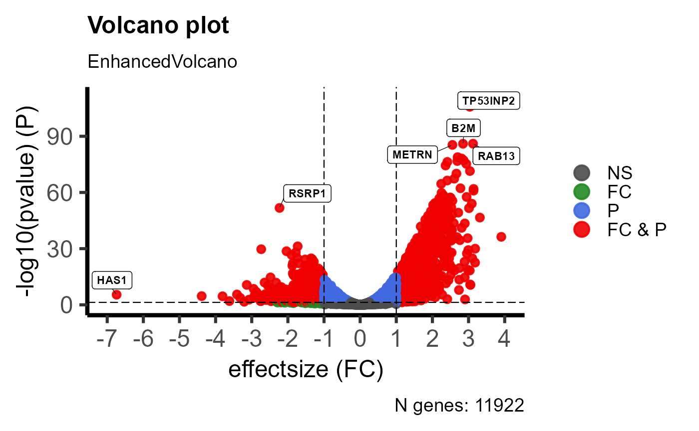
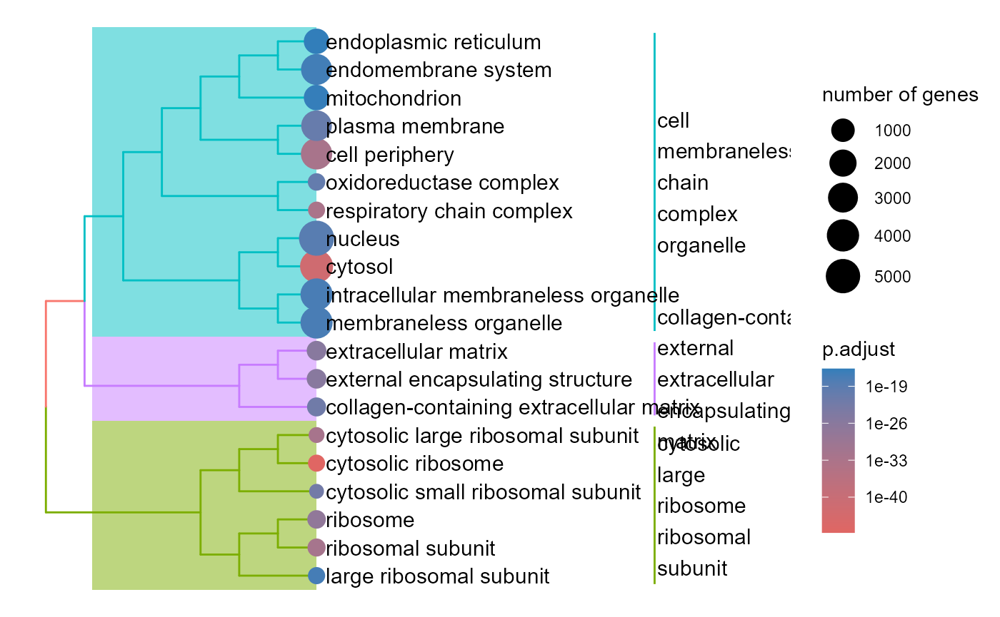
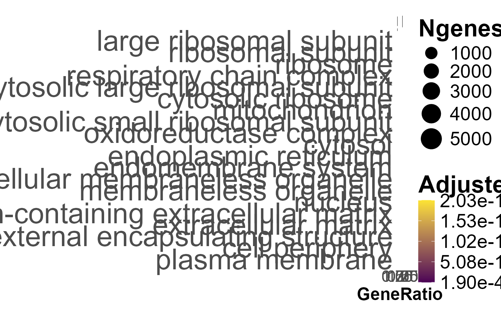
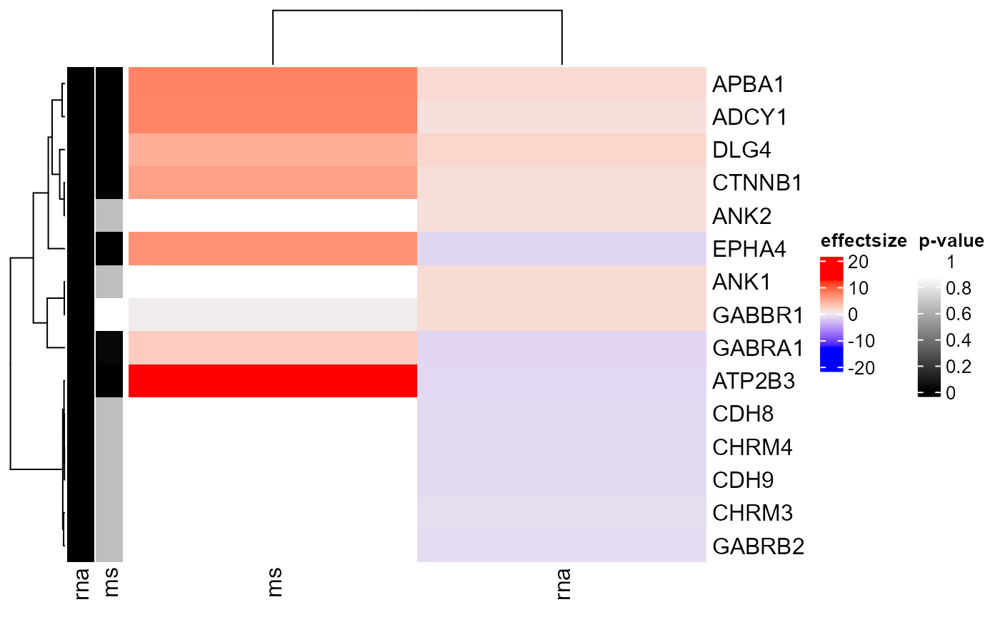

Introduction
Geneset Ordinal Association Test Enrichment Analysis (GOATEA) provides a Shiny interface with interactive visualizations and utility functions for performing and exploring automated gene set enrichment analysis using the ‘goat’ package.
GOATEA is designed to support large-scale and user-friendly enrichment workflows across multiple gene lists and comparisons, with flexible plotting and output options. Visualizations pre-enrichment include interactive Volcano and UpSet (overlap) plots. Visualizations post-enrichment include interactive geneset split term dotplot, geneset hierarchical clustering treeplot, multi-genelist gene-effectsize heatmap, enrichment overview gene-geneset heatmap and bottom-up pathway-like STRING database of protein-protein-interactions network graph.
Why use goatea?
Some enrichment visualization packages are included in Bioconductor, for instance: enrichplot, vissE, CBNplot. goatea additionally provides interactive visualizations through an intuitive and customizable Shiny user interface and allows for multi-genelist comparisons. No bioinformatic expertise is needed. goatea includes commonly used visualizations and adds a novel enrichment overview heatmap and offers a bottom-up pathway-like protein-protein interaction graph with network statistics.
A number of enrichment analysis packages are already on Bioconductor: clusterProfiler, fgsea, DOSE and many more. In goatea, goat is implemented. goat is a novel method for efficient geneset enrichment analysis. It performs within seconds and results in more identified significant terms compared to other methods, see the reference. For researchers with coding expertise, goatea provides an automated analysis workflow for performing enrichment analysis with goat and obtaining overview tables and output figures to explore your data.
How goatea works
Genelists are often obtained from transcriptomic and/or proteomic experiments. These genelist tables have to contain a ‘gene’ column with NCBI Entrez gene identifiers, a ‘symbol’ column with gene aliases (optional: can be mapped from their gene IDs), and ‘effectsize’ and ‘pvalue’ columns with measurement outcomes for a performed comparison. User defined thresholds for effect size and p-values are used to define gene significance. To get a first look and understanding of your genelist data, a volcano plot is provided. For multi-genelist data a UpSet (overlap) plot can additionally be generated to visualize significant genes between comparisons.
Genesets can be obtained by downloading Gene Ontology organism specific genesets within goatea or from .gmt files, downloaded for instance from the Molecular Signatures Database. Genelist genes and genesets will be filtered and matched, then goat or an older version of gene set enrichment analysis can be performed. Extensive filtering options help you to explore only the terms and genes within your vision.
Post-enrichment visualizations help to identify genes and terms of interest or relevance for your experimental design. Identified and selected genes of interest are then used to specifically visualize your data by zooming in on specific biological or technical aspects.
The steps above can be automated, an example workflow is described in the rest of this vignette.
As intended for interactive and intuitive usage, run the goatea Shiny interface.
Running goatea: Shiny application
Simply install the package and its dependencies, then run the script below.
Note that the goatea color scheme is easily customizable, have fun creating your own theme!
Click the ‘?’ buttons and hover over UI elements for explanation in tooltips.
library(goatea)
## customizable coloring
colors <- list(
main_bg = "#222222",
darker_bg = "#111111",
focus = "#32CD32",
hover = "#228B22",
border = "#555555",
text = "#FFFFFF"
)
## run the goatea Shiny application
shiny::shinyApp(
ui = goatea:::goatea_ui,
server = function(input, output, session) {
goatea:::goatea_server(
input, output, session,
css_colors = colors)
}
)Running goatea: automated analyses
Installation
goatea is available through Github, I intend for goatea to become available through Bioconductor.
## GOATEA installation requires the latest version of R and Rtools
## Rtools is needed for package compilation, to download and install visit:
# R: https://cran.r-project.org/mirrors.html
# Rtools: https://cran.r-project.org/bin/windows/Rtools/
# For the GOATEA development version use:
if ( ! require("pak", quietly = TRUE)) install.packages('pak')
pak::pkg_install('mauritsunkel/goatea')
## When GOATEA is on Bioconductor use:
# pak::pkg_install('goatea', dependencies = TRUE, upgrade = TRUE)
## goatea organism (taxid) genome wide annotation packages (org.Xx.eg.dg)
## goatea requires at least one of the following available organism packages:
# Human (9606)--------: org.Hs.eg.db
# Mouse (10090)-------: org.Mm.eg.db
# Fruit Fly (7227)----: org.Dm.eg.db
# Rhesus monkey (9544): org.Mmu.eg.db
# Rat (10116)---------: org.Rn.eg.db
# Worm (6239)---------: org.Ce.eg.db
# Chimpanzee (9598)---: org.Pt.eg.db
# Zebrafish (7955)----: org.Dr.eg.db
if ( ! require("pak", quietly = TRUE)) install.packages('pak')
pak::pkg_install(c(
"org.Hs.eg.db",
"org.Mm.eg.db",
"org.Dm.eg.db",
"org.Mmu.eg.db",
"org.Rn.eg.db",
"org.Ce.eg.db",
"org.Pt.eg.db",
"org.Dr.eg.db"
))
## Optional: add gene descriptions to exported tables, install annotables:
# available only for: human, mouse, rat, worm, fruit fly, Rhesus Monkey
if ( ! require("pak", quietly = TRUE)) install.packages('pak')
pak::pkg_install('stephenturner/remotes')Initialization
Set parameter values used throughout goatea.
# set chosen organism taxid (for genome wide annotation package: org.Hs.eg.db)
taxid <- 9606 # Human (Homo Sapiens)
# set and create output folder
outdir <- tempdir()
dir.create(outdir, recursive = TRUE)
#> Warning in dir.create(outdir, recursive = TRUE):
#> 'C:\Users\Home\AppData\Local\Temp\RtmpCwPAku' already exists
# set significance thresholds
p_value_threshold <- 0.05
absolute_effectsize_threshold <- 1Loading genelists
Transcriptomic and/or proteomic experiments often end up in comparing groups through differential gene expression or something similar. There, lists of genes with measurement weights and statistical probability values are obtained. Genelists have to be in .csv/.tsv/.xlsx format. Genelist tables contain a ‘gene’ column with NCBI Entrez gene identifiers, a ‘symbol’ column with gene aliases (optional: can be mapped from their gene IDs), and ‘effectsize’ and ‘pvalue’ columns with measurement outcomes for a performed comparison. Here, goat manuscript example data will be used, and expected use through uploading your own file is shown.
# GOAT paper data: download to a specific folder, tempdir() by default
data <- goat::download_goat_manuscript_data(output_dir = outdir)
#> downloading https://github.com/ftwkoopmans/goat/raw/main/analyses/goat_manuscript_datasets.rda ...
#> downloaded data was stored at: C:\Users\Home\AppData\Local\Temp\RtmpCwPAku/goat_manuscript_datasets.rda
# We select datasets from Colameo 2021 for our automated workflow.
# Thi is RNA-seq with matched mass-spectrometry data.
# Rat data is mapped to HUman NCBI Entrez gene identifies with the goat package.
genelists <- list(
rna = data$`Colameo 2021:RNA-seq:PMID34396684`,
ms = data$`Colameo 2021:mass-spec:PMID34396684`
)
head(genelists[['rna']])
#> # A tibble: 6 × 10
#> symbol log2fc effectsize pvalue pvalue_adjust hgnc_id hgnc_symbol entrez_id
#> <chr> <dbl> <dbl> <dbl> <dbl> <chr> <chr> <int>
#> 1 TP53I… 3.03 3.03 1.75e-106 2.50e-102 HGNC:1… TP53INP2 58476
#> 2 RAB13 3.12 3.12 9.13e- 87 2.39e- 83 HGNC:9… RAB13 5872
#> 3 B2M 2.85 2.85 1.00e- 86 2.39e- 83 HGNC:9… B2M 567
#> 4 METRN 2.55 2.55 4.12e- 86 8.43e- 83 HGNC:1… METRN 79006
#> 5 WASF3 2.70 2.70 1.37e- 79 2.19e- 76 HGNC:1… WASF3 10810
#> 6 NDRG2 2.81 2.81 7.30e- 79 1.04e- 75 HGNC:1… NDRG2 57447
#> # ℹ 2 more variables: gene <int>, signif <lgl>To load your own data follow this alternative example.
# set the filepath to your own data files
file <- system.file('extdata','example_genelist.csv', package = 'goatea')
# Check file formatting, see function documentation for additional parameters
genelist <- goatea::read_validate_genelist(file = file)
#> Checking file format...
# genelists <- list(
# csv = genelist
# )
head(genelist)
#> # A tibble: 6 × 5
#> symbol gene pvalue effectsize signif
#> <chr> <int> <dbl> <dbl> <lgl>
#> 1 gene_45 11023 0.123 5 FALSE
#> 2 gene_12 12763 0.435 5 FALSE
#> 3 gene_34 16847 0.435 5 FALSE
#> 4 gene_83 12069 0.0148 -4.9 TRUE
#> 5 gene_14 17454 0.0151 4.8 TRUE
#> 6 gene_96 12308 0.375 4.8 FALSELoading genesets
Genesets are terms of biological aspects associated with a set of genes. The Gene Ontology (GO) and Molecular Signatures databases (MSigDB) are commonly used repositories containing organism specific genesets. goat provides GO genesets for download, also to supply a .gmt file containing genesets downloaded from MSigDB for instance.
genesets <- goat::load_genesets_go_bioconductor(taxid = taxid)
#>
#> load_genesets_go_bioconductor(): data version = org.Hs.eg.db - Homo sapiens - 2025-02-06
## optionally: save and load from .rda to speed up after downloading
# save(genesets, file = file.path(outdir, 'genesets.rda'))
# load(file.path(outdir, 'genesets.rda')) # loading .rda to variable: genesets
## alternatively: load via .gmt file (downloaded from e.g.: MSigDB)
# then use: goat::load_genesets_gmtfile()
head(genesets)
#> # A tibble: 6 × 7
#> source source_version id name parent_id genes ngenes
#> <chr> <chr> <chr> <chr> <list<ch> <lis> <int>
#> 1 GO_BP org.Hs.eg.db - Homo sapiens - 2025-… GO:0… mito… [1] [30] 30
#> 2 GO_MF org.Hs.eg.db - Homo sapiens - 2025-… GO:0… alph… [1] [3] 3
#> 3 GO_BP org.Hs.eg.db - Homo sapiens - 2025-… GO:0… sing… [1] [14] 14
#> 4 GO_MF org.Hs.eg.db - Homo sapiens - 2025-… GO:0… sing… [1] [11] 11
#> 5 GO_CC org.Hs.eg.db - Homo sapiens - 2025-… GO:0… phos… [2] [4] 4
#> 6 GO_MF org.Hs.eg.db - Homo sapiens - 2025-… GO:0… lact… [1] [1] 1GOAT Enrichment Analysis
Gene significance is set per genelist by the user-defined thresholds. The genelist is then ordered by effect size. For this example, if there are more genes than the amount of precomputed nulldistributions goat uses for its enrichment testing the amount of genes is limited to that amount. If you do want to use all genes, set the method to ‘goat_bootstrap’.
Genelist genes and genesets will be filtered and matched, then goat or an older version of gene set enrichment analysis can be performed. Too small or too large genesets can be irrelevant or mess up testing statistics, leaving parameter values to defaults is a good starting point.
Geneset enrichment with goat is by default performed on ‘effectsize’. The user can also go for ‘pvalue’ or a specific direction by gene effectsize sign or absolute values. Besides the goat method, older methods are also implemented to enable easy comparison.
filtered_genesets_list <- list()
enrichment_results <- list()
for (name in names(genelists)) {
genelist <- genelists[[name]]
## set signif column by given p-value- and effectsize significance thresholds
genelist$signif <- genelist$pvalue <= p_value_threshold &
abs(genelist$effectsize) >= absolute_effectsize_threshold
# order genelist by effectsize
genelist <- genelist[order(abs(genelist$effectsize), decreasing = TRUE),]
## keep max n genes for regular goat method
# optionally: remove this line and use goat_bootstrap method
if (nrow(genelist) > max(goat::goat_nulldistributions$N)) {
genelist <- genelist[1:max(goat::goat_nulldistributions$N),]
}
# update genelist
genelists[[name]] <- genelist
## filter genesets
filtered_genesets <- goat::filter_genesets(
genesets = genesets,
genelist = genelist,
min_overlap = 10L,
max_overlap = NA,
max_overlap_fraction = 0.5,
min_signif = NA,
max_size = NA,
dedupe = FALSE
)
filtered_genesets_list[[name]] <- filtered_genesets
## run enrichment
enrichment_results[[name]] <- goatea::run_geneset_enrichment(
genesets = filtered_genesets,
genelist = genelist,
method = "goat",
score_type = "effectsize",
padj_method = "BH",
padj_sources = TRUE,
padj_cutoff = p_value_threshold,
padj_min_signifgenes = 0L
)
}
head(enrichment_results[[1]])
#> # A tibble: 6 × 17
#> source source_version id name parent_id ngenes_input ngenes ngenes_signif
#> <chr> <chr> <chr> <chr> <list<ch> <int> <int> <int>
#> 1 GO_CC org.Hs.eg.db -… GO:0… cyto… [2] 118 97 76
#> 2 GO_CC org.Hs.eg.db -… GO:0… cyto… [2] 5530 4335 687
#> 3 GO_BP org.Hs.eg.db -… GO:0… cyto… [1] 169 147 83
#> 4 GO_MF org.Hs.eg.db -… GO:0… tran… [1] 1320 394 105
#> 5 GO_MF org.Hs.eg.db -… GO:0… stru… [1] 175 144 78
#> 6 GO_MF org.Hs.eg.db -… GO:0… sign… [1] 1554 518 123
#> # ℹ 9 more variables: genes <list<int>>, genes_signif <list>, score_type <chr>,
#> # pvalue <dbl>, zscore <dbl>, pvalue_adjust <dbl>, signif <lgl>,
#> # score_oddsratio <dbl>, symbol <list>Genes overview table
Here, the genelists are formatted into a gene-based overview table. If there are multiple genelists, for all genelists, each gene and their p-values, effect sizes, effect size percentages, gene set ratios and overlapping significant genes will be shown.
genes_overview <- goatea::run_genelists_overlap(genelists)
genes_overview <- goatea::calculate_geneSetRatio(
enrichment_results,
genes_overview
)
head(genes_overview)
#> # A tibble: 6 × 13
#> gene symbol rna_efsi rna_pval ms_efsi ms_pval rna_perc ms_perc
#> <int> <chr> <dbl> <dbl> <dbl> <dbl> <dbl> <dbl>
#> 1 3036 HAS1 -6.74 3.94e- 6 NA NA -99.1 NA
#> 2 80736 SLC44A4 -4.39 2.22e- 5 NA NA -95.2 NA
#> 3 4509 MT-ATP8 3.91 4.90e-37 NA NA 1399. NA
#> 4 284613 CYB561D1 -3.81 2.67e- 5 NA NA -92.9 NA
#> 5 5730 PTGDS -3.62 9.69e- 3 NA NA -91.9 NA
#> 6 2830 GPR6 -3.41 2.85e- 6 NA NA -90.6 NA
#> # ℹ 5 more variables: genelist_overlap <chr>, rna_geneSetRatio <dbl>,
#> # rna_SS_geneSetRatio <dbl>, ms_geneSetRatio <dbl>, ms_SS_geneSetRatio <dbl>Enrichment searching and filtering
You can filter enrichment by querying the term names and by thresholding the numerical features. In this way you can explore relevant biological aspects and/or filter out technicalities. After filtering, use the filtered enrichment as input with the visualizations for zooming in on specific terms and their genes and interactions.
filtered_enrichment <- goatea::filter_enrichment(
df = enrichment_results[[1]],
terms_query = c("synapse", "synaptic"),
terms_antiquery = c("asymmetric"),
min_ngenes = 100,
min_ngenes_signif = 10
)
head(filtered_enrichment$name)
#> [1] "synaptic membrane"
#> [2] "postsynaptic membrane"
#> [3] "postsynaptic density"
#> [4] "postsynaptic specialization membrane"
#> [5] "postsynaptic specialization"
#> [6] "trans-synaptic signaling"Gene selection
In the goatea app, the visualizations are used to select specific genes to pass to next visualizations in order to zoom in on specific terms or groups of genes. Here we simply take the significant genes of the first filtered enrichment to show some visualizations that use gene selections.
selected_genes <- filtered_enrichment$genes_signif[[1]]Plotting
Genelist plotting
Volcano plot
A Volcano plot is commonly used to have a visual representation of the genelist. It shows an overview of genes as points with effectsize vs p-value and significance thresholds.
goatea::plot_EnhancedVolcano(
genelist = genelists[[1]],
effectsize_threshold = absolute_effectsize_threshold,
pvalue_threshold = p_value_threshold,
background_color = 'white',
foreground_color = 'black'
)
#> Warning: Using `size` aesthetic for lines was deprecated in ggplot2 3.4.0.
#> ℹ Please use `linewidth` instead.
#> ℹ The deprecated feature was likely used in the EnhancedVolcano package.
#> Please report the issue to the authors.
#> This warning is displayed once every 8 hours.
#> Call `lifecycle::last_lifecycle_warnings()` to see where this warning was
#> generated.
#> Warning: The `size` argument of `element_line()` is deprecated as of ggplot2 3.4.0.
#> ℹ Please use the `linewidth` argument instead.
#> ℹ The deprecated feature was likely used in the EnhancedVolcano package.
#> Please report the issue to the authors.
#> This warning is displayed once every 8 hours.
#> Call `lifecycle::last_lifecycle_warnings()` to see where this warning was
#> generated.
#> Coordinate system already present.
#> ℹ Adding new coordinate system, which will replace the existing one.
#> Scale for x is already present.
#> Adding another scale for x, which will replace the existing scale.
#> Warning: ggrepel: 2229 unlabeled data points (too many overlaps). Consider
#> increasing max.overlaps
UpSet overlap plot
If multiple genelists are loaded, their overlap of significant genes is shown through an UpSet plot. These show the total number of genes in a genelist and the number of overlapping significant genes for each intersection.
if (length(genelists) > 2) {
goatea::plot_genelists_overlap_upsetjs(
genelists = genelists,
mode = 'distinct'
)
}Post-enrichment plotting
Tree plot
The tree plot shows a clustered hierarchical split between terms based on their term similarity. Similarity is based on semantics of the term. Terms are clustered together by semantics, meaning words that look or mean alike. A summary of the clustered semantics is given to the right of the vertical lines for each cluster.
# filter to keep a single geneset source
single_source_enrichment <- enrichment_results[[1]] %>%
dplyr::filter(source == enrichment_results[[1]]$source[1])
goatea::plot_termtree(
single_source_enrichment,
Nterms = 20,
Nwords = 5,
Nclusters = 3
)
#> Warning: `aes_()` was deprecated in ggplot2 3.0.0.
#> ℹ Please use tidy evaluation idioms with `aes()`
#> ℹ The deprecated feature was likely used in the enrichplot package.
#> Please report the issue at
#> <https://github.com/GuangchuangYu/enrichplot/issues>.
#> This warning is displayed once every 8 hours.
#> Call `lifecycle::last_lifecycle_warnings()` to see where this warning was
#> generated.
Term-split dotplot
The dotplot shows terms split by up- and down regulation. The regulation is defined by the sign of the effect sizes of the genes in the genelists. The gene ratio shows the percentage of genes of the term that were matched with the genes of the genelist.
# filter to keep a single geneset source
single_source_enrichment <- enrichment_results[[1]] %>%
dplyr::filter(source == enrichment_results[[1]]$source[1])
goatea::plot_splitdot(single_source_enrichment, topN = 20)
Gene-genelist heatmap
This heatmap shows the selected genes for each genelist to compare their effect sizes and p-values as a simple overview.
selected_symbols <- filtered_enrichment$symbol[[1]][
filtered_enrichment$genes[[1]] %in% filtered_enrichment$genes_signif[[1]]
][1:15]
p <- goatea::plot_gene_effectsize_ComplexHeatmap(
genes = selected_symbols,
genes_overview = genes_overview
)
Gene-term heatmap
This heatmap serves as an overview of the enrichment result, combined with all genelists information. Use the search functionality and pass the resulting filtered enrichment to zoom in on relevant biological aspects and focus on filtered aspects of the enrichment for exploration. In the goatea app this heatmap is also used to select genes/terms from identified aspects of interest.
p <- goatea::plot_ComplexHeatmap(
enrichment_result = enrichment_results[[1]],
genelist = genelists[[1]],
n_cluster = 5,
n_top_terms = 20,
n_top_genes = 50,
genelist_overlap = genes_overview
)
#> Following `at` are removed: NA, because no color was defined for them.
#> Following `at` are removed: NA, because no color was defined for them.
#> Following `at` are removed: NA, because no color was defined for them.
Protein-protein interaction network
Gene sets miss information of gene-gene interactions, this visualization can offer bottom-up relationships between genes to gain insight. The STRING database is used to obtain protein-protein interaction data by efficient streaming. For the selected genes of interest, an igraph network is built in the background in order to obtain network statistics. The igraph is passed to visNetwork for (in Shiny app) interactive visualization and exploration of the network.
First we select symbols to download ppi data for our chosen organism.
# selecting 10 symbols of the searchad and significant first enriched term
selected_symbols <- filtered_enrichment$symbol[[1]][
filtered_enrichment$genes[[1]] %in% filtered_enrichment$genes_signif[[1]]
][1:10]
assign("ppi_data", get(load(system.file("extdata", "example_ppi_data.rda", package = "goatea"))))Normally, we would download STRING database PPI data, yet for this vignette, we will use example data by default. Try out this code for yourself to explore with downloaded data.
## this will download the STRING database protein-protein interaction data
## to your selected folder
# downloading should only take a couple of seconds
# downlaod happens only if the files are not found in the specified folder
# if the download does not work, double check if the STRING database is online
ppi_data <- goatea::get_string_ppi(
aliases = selected_symbols,
organism = taxid,
folder = file.path(outdir)
)I advise to regard this output as a basic and toy visualization, the goatea in Shiny app version contains node and edge hover information with all network statistics. Edges can be clicked to view their interaction scores and information on the STRING website. Nodes are clustered by STRING interaction scores. The nodes and edges can be colored by each statistical feature. Nodes can be filtered by each feature and made into a subnetwork for more detailed exploration.
# creating igraph in order to do network statistics
ppi_graph <- goatea::get_ppigraph(ppi_data = ppi_data)
# converting igraph to visnetwork for (Shiny app) interactive visualization
vis_network <- goatea::get_visNetwork(
ppigraph = ppi_graph,
genes_overview = genes_overview
)
#> Warning in min(genes_overview[[paste0(sample_name, "_efsi")]], na.rm = TRUE):
#> no non-missing arguments to min; returning Inf
#> Warning in max(genes_overview[[paste0(sample_name, "_efsi")]], na.rm = TRUE):
#> no non-missing arguments to max; returning -Inf
## showing a basic version of the visNetwork
## the goatea Shiny app version has full interactive capability
visNetwork::visNetwork(
vis_network$nodes,
vis_network$edges,
width = "100%",
height = "100%") %>%
visNetwork::visPhysics(stabilization = FALSE)Information
A thank you for your time and effort in using goatea, I hope it may aid you in exploring your data!
Contact
goatea was developed by Maurits Unkel at the Erasmus Medical Center in the department of Psychiatry. Source code is available through GitHub: https://github.com/mauritsunkel/goatea Questions regarding goatea can be sent to: mauritsunkel@gmail.com
Issues and contributions
For issues and contributions, please find the goatea Github page: https://github.com/mauritsunkel/goatea/issues
GOAT reference
Koopmans, F. GOAT: efficient and robust identification of gene set enrichment. Commun Biol 7, 744 (2024). https://doi.org/10.1038/s42003-024-06454-5
Session info
sessionInfo()
#> R version 4.5.0 (2025-04-11 ucrt)
#> Platform: x86_64-w64-mingw32/x64
#> Running under: Windows 11 x64 (build 26200)
#>
#> Matrix products: default
#> LAPACK version 3.12.1
#>
#> locale:
#> [1] LC_COLLATE=English_United States.utf8
#> [2] LC_CTYPE=English_United States.utf8
#> [3] LC_MONETARY=English_United States.utf8
#> [4] LC_NUMERIC=C
#> [5] LC_TIME=English_United States.utf8
#>
#> time zone: Europe/Amsterdam
#> tzcode source: internal
#>
#> attached base packages:
#> [1] stats graphics grDevices utils datasets methods base
#>
#> other attached packages:
#> [1] goatea_0.99.9 dplyr_1.1.4 BiocStyle_2.37.1
#>
#> loaded via a namespace (and not attached):
#> [1] RColorBrewer_1.1-3 rstudioapi_0.17.1
#> [3] jsonlite_2.0.0 shape_1.4.6.1
#> [5] magrittr_2.0.4 magick_2.9.0
#> [7] shinyjqui_0.4.1 ggtangle_0.0.7
#> [9] farver_2.1.2 rmarkdown_2.30
#> [11] GlobalOptions_0.1.2 fs_1.6.6
#> [13] ragg_1.4.0 vctrs_0.6.5
#> [15] memoise_2.0.1 ggtree_3.99.0
#> [17] htmltools_0.5.8.1 gridGraphics_0.5-1
#> [19] sass_0.4.10 bslib_0.9.0
#> [21] htmlwidgets_1.6.4 desc_1.4.3
#> [23] fontawesome_0.5.3 plyr_1.8.9
#> [25] plotly_4.11.0 cachem_1.1.0
#> [27] uuid_1.2-1 igraph_2.2.0
#> [29] mime_0.13 lifecycle_1.0.4
#> [31] iterators_1.0.14 pkgconfig_2.0.3
#> [33] Matrix_1.7-4 R6_2.6.1
#> [35] InteractiveComplexHeatmap_1.17.0 fastmap_1.2.0
#> [37] shiny_1.11.1 clue_0.3-66
#> [39] digest_0.6.37 aplot_0.2.9
#> [41] enrichplot_1.29.2 ggnewscale_0.5.2
#> [43] colorspace_2.1-2 patchwork_1.3.2
#> [45] AnnotationDbi_1.71.0 S4Vectors_0.47.0
#> [47] textshaping_1.0.3 RSQLite_2.4.3
#> [49] org.Hs.eg.db_3.21.0 labeling_0.4.3
#> [51] httr_1.4.7 compiler_4.5.0
#> [53] withr_3.0.2 bit64_4.6.0-1
#> [55] doParallel_1.0.17 S7_0.2.0
#> [57] BiocParallel_1.43.4 DBI_1.2.3
#> [59] R.utils_2.13.0 rappdirs_0.3.3
#> [61] rjson_0.2.23 tools_4.5.0
#> [63] ape_5.8-1 zip_2.3.3
#> [65] httpuv_1.6.16 R.oo_1.27.1
#> [67] glue_1.8.0 nlme_3.1-168
#> [69] GOSemSim_2.35.1 promises_1.3.3
#> [71] grid_4.5.0 cluster_2.1.8.1
#> [73] reshape2_1.4.4 fgsea_1.35.6
#> [75] generics_0.1.4 gtable_0.3.6
#> [77] tzdb_0.5.0 R.methodsS3_1.8.2
#> [79] tidyr_1.3.1 data.table_1.17.8
#> [81] utf8_1.2.6 xml2_1.4.0
#> [83] XVector_0.49.0 BiocGenerics_0.55.0
#> [85] ggrepel_0.9.6 foreach_1.5.2
#> [87] pillar_1.11.1 stringr_1.5.2
#> [89] yulab.utils_0.2.1 later_1.4.4
#> [91] circlize_0.4.16 splines_4.5.0
#> [93] treeio_1.33.0 lattice_0.22-7
#> [95] bit_4.6.0 tidyselect_1.2.1
#> [97] GO.db_3.21.0 ComplexHeatmap_2.25.2
#> [99] Biostrings_2.77.0 knitr_1.50
#> [101] bookdown_0.44 IRanges_2.43.0
#> [103] Seqinfo_0.99.2 svglite_2.2.1
#> [105] shinydashboard_0.7.3 stats4_4.5.0
#> [107] xfun_0.53 Biobase_2.69.0
#> [109] matrixStats_1.5.0 DT_0.34.0
#> [111] visNetwork_2.1.4 stringi_1.8.7
#> [113] UCSC.utils_1.5.0 lazyeval_0.2.2
#> [115] ggfun_0.2.0 yaml_2.3.10
#> [117] kableExtra_1.4.0 evaluate_1.0.5
#> [119] codetools_0.2-20 tibble_3.3.0
#> [121] qvalue_2.41.0 BiocManager_1.30.26
#> [123] ggplotify_0.1.3 cli_3.6.5
#> [125] arrow_21.0.0.1 xtable_1.8-4
#> [127] systemfonts_1.2.3 jquerylib_0.1.4
#> [129] upsetjs_1.11.1 EnhancedVolcano_1.27.0
#> [131] Rcpp_1.1.0 GenomeInfoDb_1.45.11
#> [133] png_0.1-8 parallel_4.5.0
#> [135] pkgdown_2.1.3 ggplot2_4.0.0
#> [137] assertthat_0.2.1 blob_1.2.4
#> [139] DOSE_4.3.0 goat_1.1.3
#> [141] tidytree_0.4.6 viridisLite_0.4.2
#> [143] ggiraph_0.9.1 scales_1.4.0
#> [145] openxlsx_4.2.8 purrr_1.1.0
#> [147] crayon_1.5.3 clisymbols_1.2.0
#> [149] GetoptLong_1.0.5 rlang_1.1.6
#> [151] cowplot_1.2.0 fastmatch_1.1-6
#> [153] KEGGREST_1.49.1 shinyjs_2.1.0